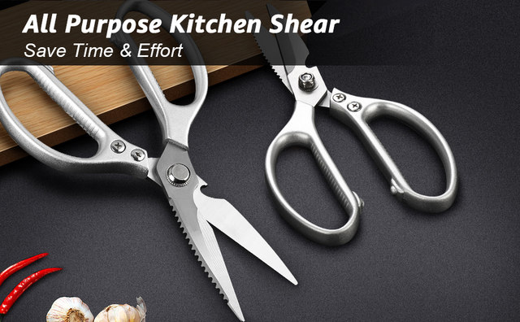
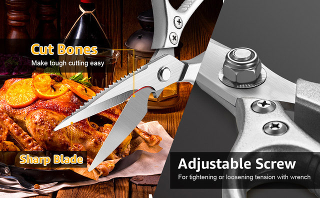
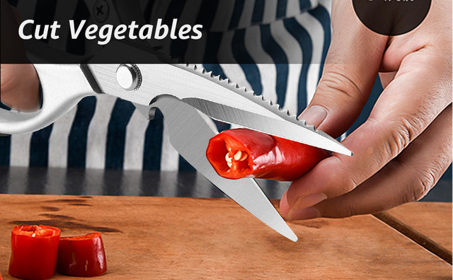
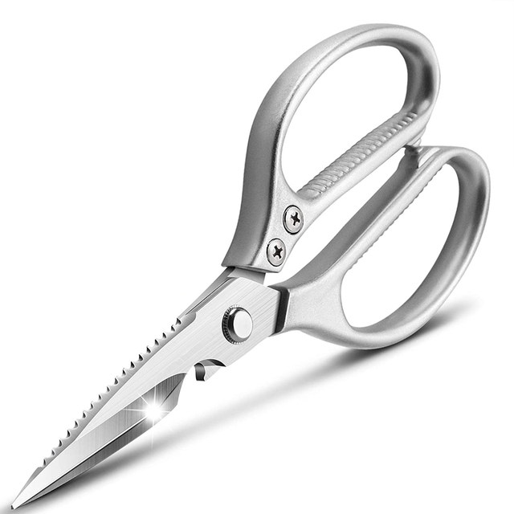
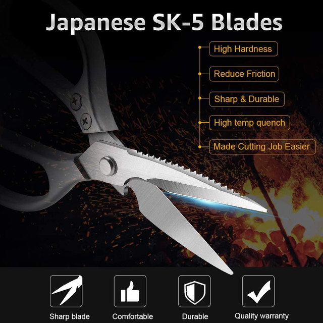
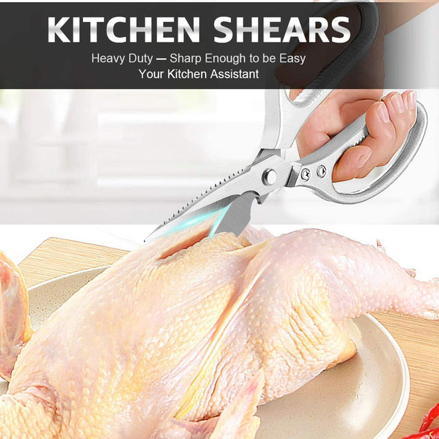
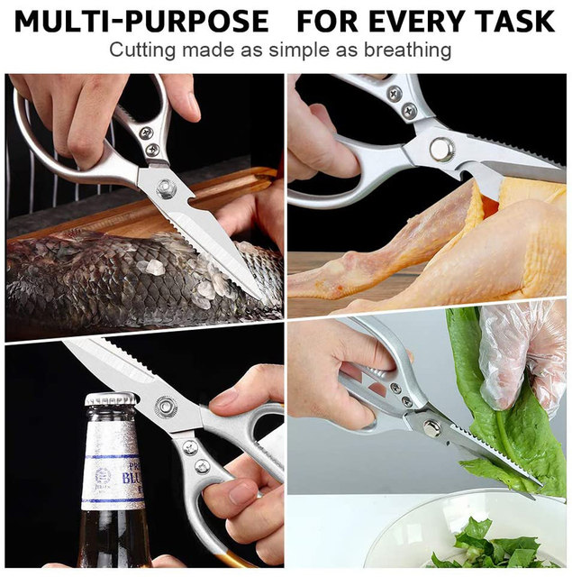

• High-Quality Material :Crafted from durable stainless steel, these kitchen scissors are resistant to rust and corrosion, ensuring long-lasting use.
• Multi-Functional Use :These scissors are perfect for preparing food, from chopping chicken and vegetables to slicing barbecue meat and fish.
• Sharp Blade :The sharp blade of these scissors allows for precise cutting, making your kitchen tasks easier and more efficient.
• Versatile DIY Supplies :These scissors are not just for the kitchen. Their robust construction makes them ideal for woodworking projects, adding versatility to your toolkit.






